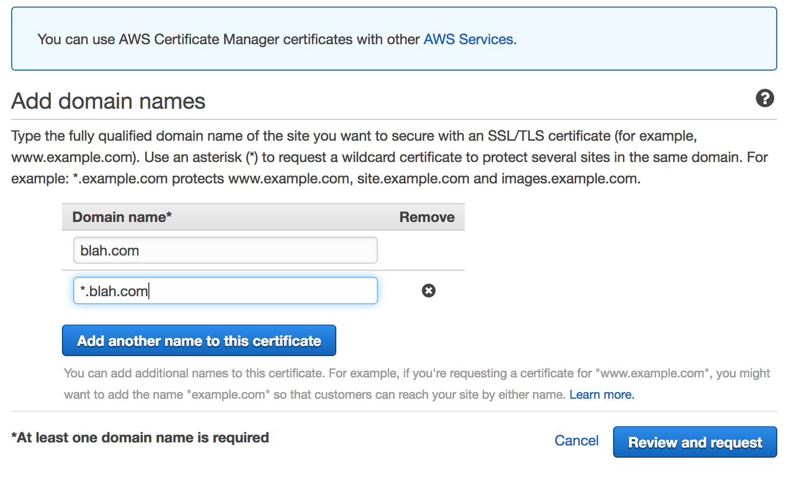

Switching your AWS Elastic Beanstalk site to https
Why does https matter?
If you have a website that involves any personal information (including passwords), you should be securing your site with https. Even if you're not interested in your users' data, there are pragmatic reasons to use http; Google's going to start labeling non-https domains as "unsecured". So, avoid that label and use https!
Let's Encrypt! was one of the first to offer free SSL certificates to anyone; if you host on Amazon Web Services via Elastic Beanstalk you can't easily install one of their certificates, but you still can install a free certificate.
Below I'll show you how to: get a free SSL certificate from AWS Certificate Manager, connect that certificate to your site hosted on AWS Elastic Beanstalk, and automatically route regular, unsecured http traffic to your new https address(es).
The steps we will go through are as follows:
1. Get an SSL certificate for your site
2. Modify one of the .config files in your .ebextensions folder
3. Update your settings to switch to https
4. Push your changes to master
1. Get an SSL certificate for your site
AWS Certificate Manager issues free certificates, and is straightforward to use. You (a) specify what domain (and subdomains) you want a certificate for, (b) submit your request, and then (c) click through a confirmation link that will be emailed to you.
IMPORTANT Keep in mind that *.blah.com will resolve to https://blog.blah.com and https://www.blah.com, but not https://blah.com, so after entering your domain name, be sure to click on "Add another name to this certificate" and include your plain domain name (e.g. blah.com)

After clicking on Review and Request you will come to another page where you review the domain name for which you've requested a certificate and submit your request. AWS sends an email to the admin email address for your domain. The message contains a link that lets you verify that you do indeed want the certificate issued. Once you've verified it, it's time to make changes to some code.
2. Update one of your .config files to redirect all traffic to SSL
Elastic Beanstalk deployments are customized by .config files in the .ebextensions folder in your project's root directory. To deploy my site I followed RealPython's excellent guide to deployment on Elastic Beanstalk, which left me with two files in my .ebextensions folder: 01_packages.config and 02_python.config. Without making changes to your .config, your site will not redirect http connections to https; instead, it will allow both types. Thanks to this StackOverflow post, we can copy and paste code into one of these .config files to redirect http traffic to https.
My original 01_packages.config looked like this:
packages: yum: git: [] postgresql93-devel: [] libjpeg-turbo-devel: []
I edited 01_packages.config to look like this:
packages: yum: git: [] postgresql93-devel: [] libjpeg-turbo-devel: [] files: "/etc/httpd/conf.d/ssl_rewrite.conf": mode: "000644" owner: root group: root content: | RewriteEngine On <If "-n '%{HTTP:X-Forwarded-Proto}' && %{HTTP:X-Forwarded-Proto} != 'https'"> RewriteRule (.*) https://%{HTTP_HOST}%{REQUEST_URI} [R,L] </If>
Now commit your changes, but don't eb deploy just yet...you haven't configured your load balancer to accept https traffic!
3. Update your settings
Now we need to turn on https listening. If we don't do this, your site won't know that it should be looking for traffic to SSL endpoints.
In your Elastic Beanstalk application's AWS console, open the Confirguration window, scroll down to Network Tier, and open the Load Balancing settings. You'll see something like this:
!(Elastic Beanstalk settings default)[/images/all_off.png]
Under the Load Balancer section, change the Secure Listener Port from Off to 443, and select your SSL Certificate ID. It should look like this:
!(Elastic Beanstalk settings changed)[/images/all_on.png]
It's important that you leave the regular Listener Port on. If you turn in off, users must type in https:// before your URL to get to your site. So, don't touch those options.
4. Deploy your updated code & bask in your secured connection
Now, hop over to your terminal window and with a quick eb deploy you will push your changes.
Enjoy
That's it. You've now got a site that's https by default and didn't cost you a penny more. Got suggestions on how to improve this process? Hit me up on twitter.